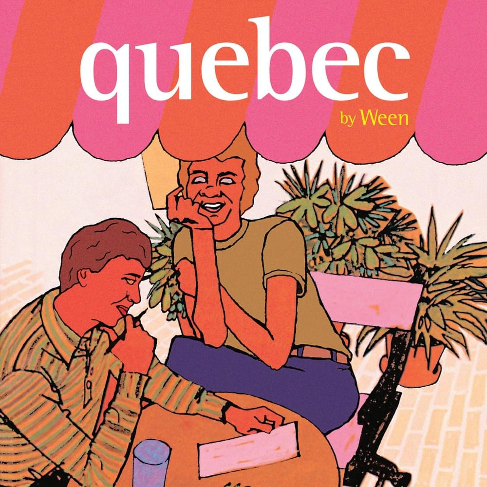

Arguably the best of the best!
Home
Written and Recorded in the wake of Gener's divorce, Quebec marks a maturing of Weens sound. With the same world
class production standards as the previous release White Pepper, but more off the wall wacky compositional choices -
Quebec brings together the best of the two disparate worlds of ween - Off the wall lo-fi energy meets measured high end song craft!
- It's Gonna Be a Long Night
- Zoloft
- Transdermal Celebration
- Among His Tribe
- So Many People in the Neighborhood
- Happy Colored Marbles
- Spinal Meningitis (Got Me Down)
- Chocolate Town
- Cold Blows the Wind
- Weepin' in the Promised Land
- I Don't Want It
- The Fucked Jam
- Alcan Road
- The Argus
- If You Could Save Yourself (You'd Save Us All)
